CENTRO ESTADUAL DE EDUCAÇÃO TECNOLÓGICA PAULA SOUZA
FACULDADE DE TECNOLOGIA DE JACAREÍ
CURSO SUPERIOR DE TECNOLOGIA EM DESENVOLVIMENTO DE SOFTWARE MULTIPLATAFORMA
ERRORSQUAD
SISTEMA INTEGRADO DE CONTROLE DE ACESSO COM TERMINAL ESP32, APLICAÇÃO MÓVEL E BACKEND EM NUVEM
Arthur Facchinetti
Caio Araujo
Carlos Santo
Felipe Pacheco
João Victor Lopes Rosa
Leo Silva
JACAREÍ
2026
ERRORSQUAD
SISTEMA INTEGRADO DE CONTROLE DE ACESSO COM TERMINAL ESP32, APLICAÇÃO MÓVEL E BACKEND EM NUVEM
Relatório técnico-científico apresentado à Faculdade de Tecnologia de Jacareí — FATEC Jacareí, como requisito parcial da Aprendizagem Baseada em Projetos (ABP) do curso Superior de Tecnologia em Desenvolvimento de Software Multiplataforma, referente ao Desafio 4DSM 2026-2.
Orientação: professor responsável pela disciplina de Projeto.
JACAREÍ
2026
Este trabalho descreve o desenvolvimento de um sistema integrado de controle de acesso para edifícios, composto por um terminal físico baseado em ESP32, uma aplicação móvel em Flutter e um backend em Node.js/TypeScript executado em nuvem. O problema tratado é a substituição de controles de acesso baseados em chaves ou credenciais estáticas por um fluxo auditável, com autorizações temporárias, QR Code rotativo e autenticação por NFC. A solução foi construída em três sprints, com arquitetura cliente-servidor, banco PostgreSQL, mensageria MQTT e implantação contínua. Os resultados incluem o fluxo de acesso por QR e por NFC validado com hardware real, o aplicativo com as telas de usuário e administração, a demo web publicada, o worker MQTT em operação e uma suíte automatizada com centenas de testes. Também são declaradas as limitações: o módulo GPS do terminal não estava disponível; a resiliência offline do firmware foi planejada e postergada; a medição de consumo elétrico não foi realizada; a abertura física de uma cancela real não foi demonstrada; e a revisão de segurança permanece em revisão por pares. O trabalho conclui que o objetivo de um controle de acesso funcional, auditável e integrável foi alcançado no escopo de software e de bancada, com as lacunas físicas explicitamente registradas.
Palavras-chave: controle de acesso; ESP32; NFC; QR Code; Flutter; MQTT; arquitetura em nuvem.
This work describes the development of an integrated building access control system composed of an ESP32-based physical terminal, a Flutter mobile application, and a Node.js/TypeScript backend running in the cloud. The problem addressed is the replacement of key-based or static-credential access control with an auditable flow based on temporary authorizations, rotating QR codes, and NFC authentication. The solution was built in three sprints using a client-server architecture, a PostgreSQL database, MQTT messaging, and continuous deployment. Results include a QR and NFC access flow validated with real hardware, the mobile application with user and administration screens, a published web demo, an operating MQTT worker, and an automated test suite with hundreds of tests. Limitations are also stated: the terminal GPS module was unavailable; firmware offline resilience was planned and postponed; electrical consumption was not measured; physical gate actuation was not demonstrated with a real gate; and the security review remains under peer review. The work concludes that the goal of a functional, auditable, and integrable access control was achieved within the software and bench scope, with physical gaps explicitly recorded.
Keywords: access control; ESP32; NFC; QR Code; Flutter; MQTT; cloud architecture.
Figura 1 – Componentes da solução
Figura 2 – Implantação em desenvolvimento e produção
Figura 3 – Casos de uso
Figura 4 – Modelo de dados
Figura 5 – Rotação do QR Code
Figura 6 – Acesso por QR Code
Figura 7 – Acesso por NFC (tag física e celular)
Figura 8 – Demo web: tela de entrada no tema claro
Figura 9 – Demo web: tela de entrada no tema escuro
Figura 10 – App: minhas autorizações
Figura 11 – App: detalhe da autorização
Figura 12 – App: acesso por NFC com prova ativa
Figura 13 – App: scanner de QR Code
Figura 14 – App: perfil do usuário
Quadro 1 – Requisitos funcionais e situação final
Quadro 2 – Requisitos não funcionais e restrições
Quadro 3 – Entregas por sprint
Quadro 4 – Evidências de teste e operação
Quadro 5 – Rastreabilidade entre requisito, evidência e lacuna
Quadro 6 – Riscos residuais e tratamento
ABP — Aprendizagem Baseada em Projetos
ACK — confirmação de execução de comando
API — Application Programming Interface
ATS — Answer To Select
CI/CD — Integração Contínua e Entrega Contínua
ESP32 — microcontrolador com Wi-Fi e Bluetooth
HCE — Host Card Emulation
JWT — JSON Web Token
MQTT — protocolo de mensageria publish/subscribe
NFC — Near Field Communication
QR — Quick Response
RBAC — Role-Based Access Control
RC522 — leitor NFC de 13,56 MHz
REST — Representational State Transfer
TLS — Transport Layer Security
O controle de acesso em edifícios costuma depender de chaves físicas, cartões de proximidade ou porteiros. Esses mecanismos são difíceis de auditar, de revogar em tempo real e de operar com autorizações temporárias, como a visita de um prestador por algumas horas. O desafio proposto pela FATEC Jacareí para o 4DSM 2026-2 pede um sistema de baixo custo com dois componentes principais: um terminal de acesso, responsável por ler QR Code e NFC e acionar a liberação, e uma aplicação móvel, usada para consultar autorizações, ler o QR e administrar o sistema (FATEC, 2026).
O problema técnico central é conciliar três requisitos que puxam em direções diferentes: (i) a decisão de acesso precisa ser centralizada e auditável, para que o terminal não seja uma autoridade isolada; (ii) a leitura no terminal precisa ser rápida o suficiente para uma pessoa encostar o celular ou a tag e receber o retorno; e (iii) a operação precisa sobreviver a falhas de rede sem liberar acesso por conta própria. A solução adotada separa a decisão da atuação: o terminal apenas lê a credencial e publica a tentativa; o backend decide; o terminal executa o comando já decidido e devolve um ACK.
O objetivo geral foi construir um sistema integrado de controle de acesso, com terminal físico, aplicação móvel e backend em nuvem, capaz de autorizar e registrar acessos por QR Code e NFC. Os objetivos específicos foram:
A separação entre decisão e atuação reduz o risco de um terminal comprometido liberar acesso por conta própria. O uso de credenciais temporárias e de uso único permite revogar acessos sem trocar fechaduras. O QR rotativo de 25 segundos e a prova HCE de 60 segundos, consumida no primeiro acesso aceito, reduzem a janela de reutilização de uma credencial capturada. A auditabilidade é obtida porque toda tentativa vira um evento com decisão, motivo, autorização e comando associado.
Do ponto de vista acadêmico, o projeto integra conteúdos de engenharia de software, banco de dados, redes, sistemas embarcados, desenvolvimento móvel e DevOps em um artefato único, com evidências versionadas e limitações declaradas.
A Seção 2 apresenta os requisitos e as decisões de escopo. A Seção 3 descreve a arquitetura e as tecnologias. A Seção 4 percorre o desenvolvimento por sprint. A Seção 5 consolida os resultados e as evidências. A Seção 6 discute dificuldades e limitações. A Seção 7 conclui. Os apêndices reúnem o roteiro de reprodução e o índice de evidências.
Os requisitos foram lidos do documento do Desafio 4DSM 2026-2 e mantidos em uma matriz versionada, com status e evidência por item (ERRORSQUAD, 2026a). A matriz distingue quatro situações: atendido, parcial, não atendido e não comprovado. Um requisito só é marcado como atendido quando existe evidência no repositório ou execução registrada; caso contrário, a lacuna é declarada.
Quadro 1 – Requisitos funcionais e situação final
| ID | Requisito (resumo) | Situação | Evidência principal |
|---|---|---|---|
| RF01 | Cadastro de usuários com perfis | Atendido | CRUD e RBAC no backend |
| RF02 | Cadastro de local de acesso | Atendido | API e tela de locais |
| RF03 | Autorização com janela, usos e situação | Parcial | Intervalo contínuo; não há janela diária |
| RF04 | Consulta de autorizações com filtros | Atendido | Listagem paginada e filtros |
| RF05 | Cancelamento de autorização | Atendido | Cancelamento com motivo |
| RF06 | Histórico de acessos | Atendido | Eventos e tela de histórico |
| RF07 | Autenticação no app | Atendido | Login JWT e sessão persistida |
| RF08 | Usuário vê suas autorizações | Atendido | Tela e API /me/authorizations |
| RF09 | Leitura de QR pelo app | Atendido | Scanner envia pedido e mostra resultado |
| RF10 | Leitura de NFC pelo terminal | Atendido | RC522, MQTT e decisão no backend |
| RF11 | Terminal com tela, NFC, sinalização, GPS e abertura | Parcial | Sem GPS (módulo indisponível); abertura física de cancela não demonstrada |
| RF12 | QR rotativo de 25 s | Atendido | Emissão e publicação no worker |
| RF13 | Validação do QR (assinatura, prazo, local, usos) | Atendido | Política de acesso e geofence de 100 m |
| RF14 | Validação NFC pelo backend | Atendido | Tag física e prova HCE |
| RF15 | Liberação do acesso | Atendido | Comando open e servo posicional |
| RF16 | Negação com indicação visual/sonora | Atendido | LED, buzzer e display |
| RF17 | Registro de toda tentativa | Atendido | Evento por decisão, com motivo e ACK |
Fonte: adaptado de ERRORSQUAD (2026a).
Quadro 2 – Requisitos não funcionais e restrições
| ID | Requisito (resumo) | Situação | Observação |
|---|---|---|---|
| RNF01 | IoT + backend Node/TS + API REST + app | Atendido | Monorepo com firmware, backend e mobile |
| RNF02 | Autenticação, proteção e comunicação segura | Parcial | JWT, HTTPS, TLS no broker e no firmware; revisão de segurança em revisão por pares |
| RNF03 | Retry/persistência sob falha | Parcial | Outbox no backend; fila local do firmware postergada (US-25) |
| RNF04 | Interface acessível ao público idoso | Parcial | Fonte ampliada e rótulos; auditoria formal não realizada |
| RNF05 | Modularidade | Atendido | Clean Architecture e regra de camadas |
| RNF06 | Banco em nuvem | Atendido | PostgreSQL no Neon |
| RNF07 | Eficiência energética | Parcial | Projeto e orçamento documentados; consumo não medido |
| RNF08 | CI com build, testes e lint | Parcial | Checks obrigatórios; firmware sem lint dedicado |
| RNF09 | CD automatizado | Atendido | Deploy do backend após CI |
| RNF10 | Testes no pipeline | Atendido | Backend, mobile e firmware |
| RNF11 | Git com branches e commits descritivos | Atendido | Fluxo por branch e PR |
| RNF12 | Feedback de build/deploy | Atendido | GitHub Actions |
| RP01 | Node.js + Express + TypeScript | Atendido | Backend |
| RP02 | Integração com dispositivo físico | Parcial | NFC, display, servo e feedback; GPS ausente |
| RP03 | Protocolo IoT | Atendido | MQTT v1 |
| RP04 | Aplicativo móvel | Atendido | Flutter/Android |
| RP05 | Cliente-servidor | Atendido | App, API, worker e terminal |
| RP06 | Desenvolvimento incremental | Atendido | Três sprints |
| RP07 | Documentação de arquitetura | Atendido | Diagramas em Mermaid |
| RP08 | Escopo viável com simulações | Atendido | Wokwi e simulador Node |
| RP09 | Pipeline CI/CD | Atendido | GitHub Actions |
| RP10 | Testes no pipeline | Atendido | RNF10 |
| RP11 | Deploy automatizado em nuvem | Atendido | Vercel, Render e Neon |
| RP12 | Conteinerização | Parcial | Backend e infraestrutura local |
Fonte: adaptado de ERRORSQUAD (2026a).
Três decisões foram tomadas e registradas ao longo do projeto. A primeira foi não usar o UID aleatório do celular como identidade: o Android apresenta um UID que muda a cada aproximação, e usá-lo criaria uma identidade instável e não autenticada. Em vez disso, o aplicativo emite uma prova efêmera de 128 bits na API e a apresenta por HCE; o banco guarda apenas o hash, e a prova é consumida no primeiro acesso aceito (ERRORSQUAD, 2026b).
A segunda foi manter o terminal sem autoridade de decisão. Sem rede ou sem hora confiável, o terminal recusa o comando; ele nunca abre a porta por conta própria. A terceira foi declarar o GPS do terminal fora do escopo quando o módulo NEO-6M não estava disponível. A posição usada na decisão continua vindo do aplicativo no pedido de QR, e o terminal não publica coordenada.
A solução é um monorepo com quatro partes: aplicativo Flutter, API REST em Node.js/TypeScript, worker MQTT e firmware ESP32. A API e o worker compartilham o mesmo código de domínio e o mesmo banco PostgreSQL, mas são processos separados: a API atende o aplicativo por HTTPS; o worker permanece conectado ao broker e processa tentativas, ACKs e presença. O terminal fala MQTT com o broker e nunca acessa o banco.
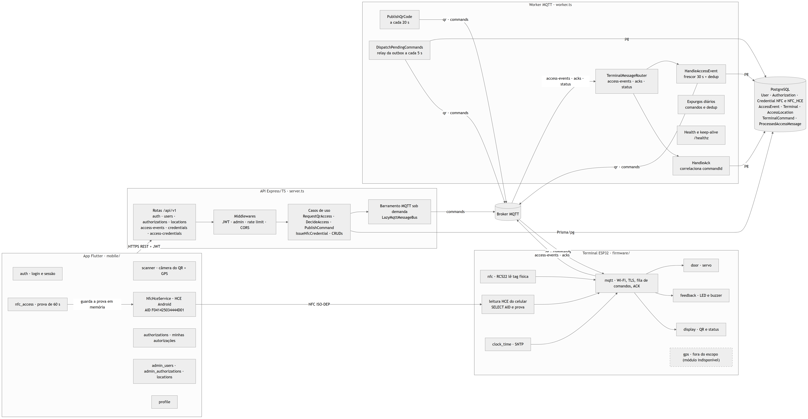
A Figura 2 mostra a implantação. Em desenvolvimento, o banco e o broker sobem por Docker Compose e a API/worker rodam localmente. Em produção, a API está na Vercel, o worker no Render, o banco no Neon e o broker no EMQX Cloud com TLS. O aplicativo é distribuído como APK de depuração para a banca; a demo web é publicada em projeto separado na Vercel.
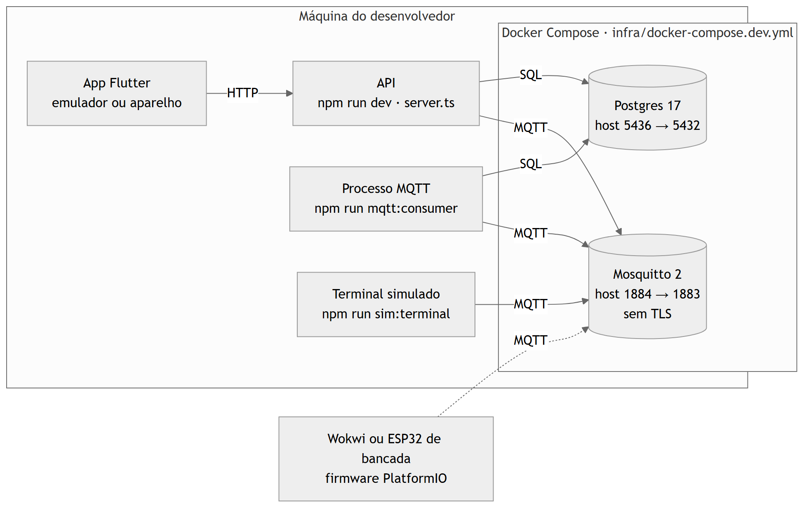
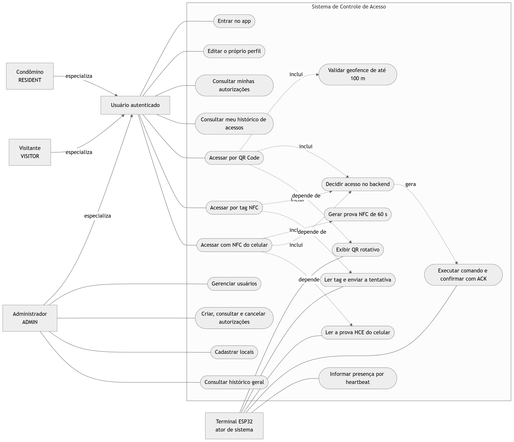
A Figura 3 resume os atores e casos de uso. O usuário autenticado consulta autorizações, escaneia o QR e usa o NFC do celular; o administrador gerencia usuários, autorizações e locais; o terminal exibe o QR, lê tag e celular, executa o comando e confirma com ACK. O heartbeat de presença está implementado no firmware, mas ainda não foi confirmado no hardware.
O backend segue uma separação em camadas: domain concentra entidades e regras sem dependência externa; application orquestra casos de uso; infrastructure implementa Prisma, MQTT e HTTP; main monta a aplicação. A regra de dependência é verificada no lint. A API expõe contrato REST versionado e documentação OpenAPI; a validação de entrada usa Zod, e os erros de domínio são traduzidos para respostas HTTP sem vazar detalhes internos (ERRORSQUAD, 2026c).
Os fluxos principais são: emissão de QR assinado; emissão de prova HCE; decisão de acesso para QR, tag NFC e HCE; consulta de autorizações e histórico; e administração de usuários e locais. A decisão acontece em uma transação que grava o evento, consome a autorização e, quando liberado, grava o comando na outbox. O consumo condicional evita gastar um uso quando a autorização já se esgotou ou quando a credencial HCE já foi consumida.
O aplicativo foi desenvolvido em Flutter, com Riverpod para estado e go_router para navegação. As telas cobrem login, autorizações, detalhe, histórico, perfil, locais, administração e scanner. O scanner usa mobile_scanner para ler o QR e geolocator para obter a posição; o pedido é enviado com um requestId idempotente. A sessão é persistida no armazenamento seguro do aparelho, e o token é anexado apenas em requisições para a origem da API.
Um ajuste relevante ocorreu no fim da Sprint 3: a localização passou a ser buscada na abertura do aplicativo, e não apenas quando o QR é lido. Sem isso, o GPS a frio podia exceder o limite de dez segundos e o pedido nem chegava ao backend. O aplicativo reaproveita a posição apenas se ela for recente e precisa; caso contrário, busca uma nova dentro do mesmo limite.
O firmware é escrito em C++ com PlatformIO para ESP32. Os módulos separam responsabilidades: mqtt (conexão, TLS, comandos, ACK, status), nfc (RC522 e HCE), display (OLED e LCD), door (servo posicional), feedback (LED e buzzer), clock_time (SNTP) e gps (esqueleto, sem módulo disponível). O terminal só executa um comando se tiver hora confiável, se o comando estiver dentro do prazo e se a porta não estiver em ciclo. O ACK é publicado uma vez; o relay do backend republica o mesmo comando enquanto não houver ACK, e o terminal deduplica por commandId.
O modelo relacional cobre usuários, locais, autorizações, credenciais, eventos, terminais, comandos e deduplicação de mensagens. A Figura 7 apresenta as entidades principais e seus relacionamentos. A credencial armazena somente o hash do token ou do UID normalizado; a prova HCE tem consumedAt para garantir uso único.
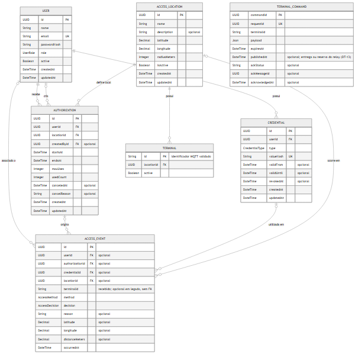
A autenticação usa JWT com segredo obrigatório em produção, perfis ADMIN/RESIDENT/VISITOR e limitação de tentativas de login. A API responde por HTTPS e aplica CORS por allowlist exata; a demo web tem sua origem cadastrada explicitamente. O broker exige TLS, e o firmware valida o certificado com CA embutida — a configuração que aceita qualquer certificado é proibida no CI. Segredos de produção ficam no provedor e não são versionados. A revisão de segurança complementar foi conduzida e está em revisão por pares; os riscos residuais e os aceites formais pendentes estão registrados na evidência da US-33.
A Sprint 1 (15 a 21 de outubro de 2026) teve como objetivo colocar a fundação no ar e um esqueleto conversando ponta a ponta em simulação. Foram entregues a estrutura do monorepo, o esqueleto do backend com autenticação e usuários, o firmware inicial com display, servo, LED e buzzer, o simulador de terminal e a infraestrutura local com Mosquitto e PostgreSQL. A revisão e a retrospectiva registraram o que funcionou e o que precisava amadurecer: contrato, testes e deploy.
A Sprint 2 (22 de outubro a 11 de novembro) entregou o fluxo QR no backend, a credencial de 25 segundos, a decisão de acesso, o evento auditado, a outbox e o worker MQTT com relay e deduplicação. Também entraram o login real no aplicativo, as telas do Figma, a administração de usuários, autorizações e locais, e o endurecimento de entrega: migrations no CD, seed protegida, TLS no firmware, CORS, teto de 100 metros, Actions pinadas por SHA e Dependabot (ERRORSQUAD, 2026d).
O fechamento ocorreu em 10 de novembro, um dia antes da Review, com 11 de 13 histórias concluídas; as duas restantes e algumas antecipações da Sprint 3 foram concluídas em 11 de novembro. O documento da Review 2 registra a separação entre o que estava no servidor, o que estava no aplicativo e o que ainda dependia de bancada.
A Sprint 3 (12 a 25 de novembro) concentrou o que faltava para o controle de acesso físico e para a entrega final. As entregas efetivas foram:
HostApduService; o firmware lê a prova por ISO-DEP e publica nfc_hce_read.offline; o firmware passa a anunciar presença sem depender de uma leitura NFC.A US-25 (resiliência offline do firmware) foi analisada, teve o escopo detalhado e foi movida para bloqueio por decisão do time: ela não bloqueia a entrega e mexe no caminho de reconexão e na persistência local, com risco de instabilidade na véspera da banca. O card registra o escopo preservado para retomada.
Quadro 3 – Entregas por sprint
| Sprint | Período | Foco | Resultado principal |
|---|---|---|---|
| S1 | 15–21/10/2026 | Fundação | Monorepo, esqueletos, simulação e infraestrutura local |
| S2 | 22/10–11/11/2026 | Fluxo QR real | Decisão, evento, outbox, app, admin e deploy |
| S3 | 12–25/11/2026 | NFC, hardware e entrega | Tag, HCE, QR no OLED, heartbeat, demo web e documentação final |
Fonte: elaborado pelos autores (2026).
O time trabalhou com branches por card, commits descritivos, pull requests e revisão por pares. A main exige seis checks obrigatórios e uma aprovação; o CodeQL complementa a análise. O Definition of Done inclui testes, documentação afetada e evidência. As evidências ficam em docs/entrega/evidencias/, uma por card, com o que foi verificado, o que não foi e como reproduzir.
Na data de entrega, a suíte do aplicativo tinha 664 testes aprovados e análise estática sem problemas. O backend teve 450 testes aprovados no merge do fluxo HCE, incluindo integração e unitários; a suíte de firmware tem testes host para lógica pura, MQTT com broker simulado, TLS, timing da porta e leitura NFC/HCE, além de builds com e sem TLS. O CI executa build do backend, Docker, análise e testes do app, build e instalação do APK, e build do firmware com -Werror nos testes host.
Quadro 4 – Evidências de teste e operação
| Item | Evidência |
|---|---|
| App Flutter | 664 testes aprovados; flutter analyze sem problemas (24/11/2026) |
| Backend | 450 testes aprovados no merge do #77; CI com lint, typecheck, testes, build e E2E |
| Firmware | Suite host (MQTT, TLS, NFC/HCE, display, servo, timing) e builds PlatformIO |
| CI | Seis checks obrigatórios + CodeQL + Dependabot |
| API em produção | /health com status: ok e database: ok |
| Worker MQTT | /healthz com status: ok; conexão TLS ao broker |
| Demo web | Página, manifest, rota de login e CORS verificados em 24/11/2026 |
| Hardware | QR, tag física e HCE com decisão GRANTED e ACK executed |
Fonte: elaborado pelos autores (2026).
A Figura 6 mostra a sequência do acesso por QR. O aplicativo lê o token exibido no terminal, obtém a posição e envia o pedido com um requestId. A API valida assinatura, prazo, terminal, credencial, autorização, usos e distância; grava o evento; consome a autorização; e publica o comando. O terminal executa e devolve o ACK. Em 23 e 24 de novembro, leituras reais produziram eventos GRANTED com ACK executed; tentativas fora do raio produziram DENIED com motivo OUT_OF_RANGE, sem comando.
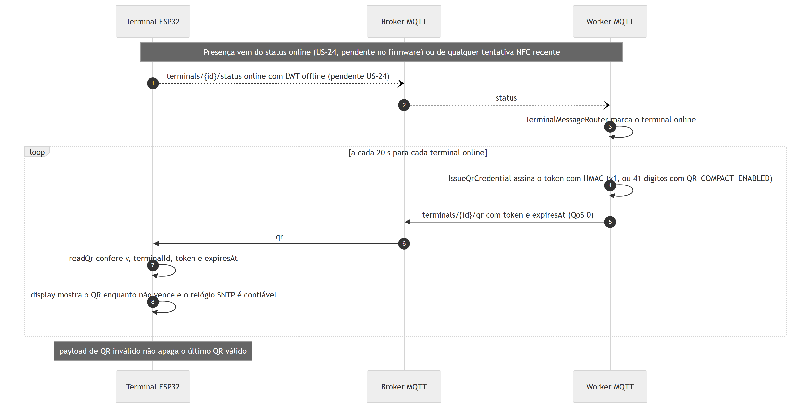
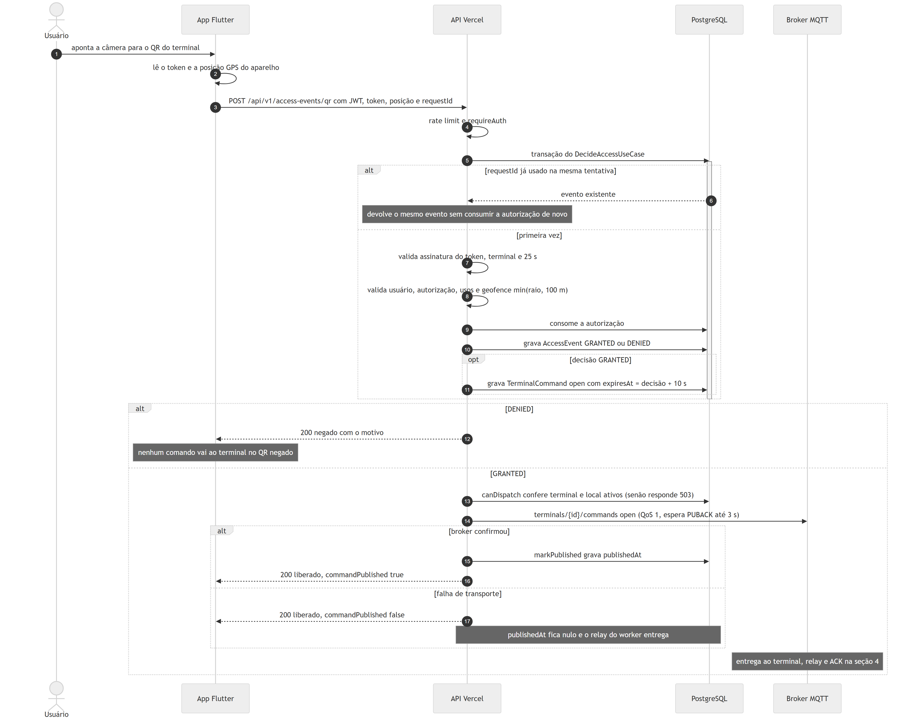
A Figura 7 mostra as duas formas de NFC. A tag física envia o UID normalizado. O celular envia uma prova de 128 bits obtida na API, apresentada por HCE; o firmware envia o SELECT AID, recebe 16 bytes e o status 9000, e publica nfc_hce_read. A prova é consumida no primeiro acesso aceito; uma segunda apresentação da mesma prova é negada com INVALID_CREDENTIAL, sem gastar um novo uso da autorização.
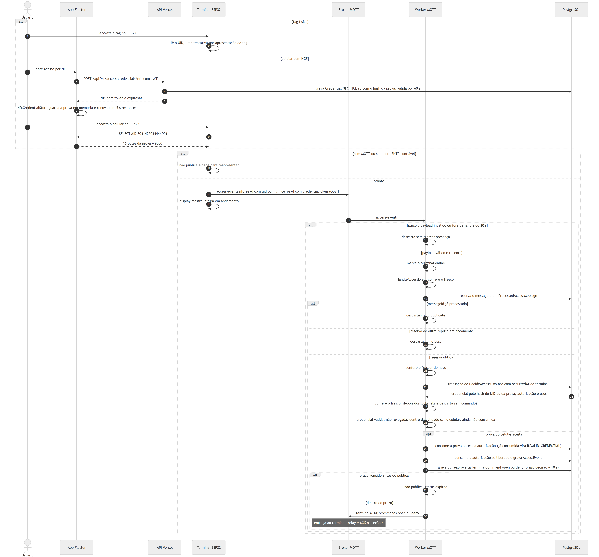
Em bancada, a tag física abriu o acesso duas vezes, e o NFC do celular abriu quatro vezes, todas com ACK executed. A leitura do celular exigiu um ajuste de tempo: o RC522 espera 25 milissegundos por resposta, e o Android levava mais que isso para conectar ao serviço HCE na primeira apresentação. A correção foi preparar o serviço enquanto o aplicativo está em primeiro plano na tela de NFC, sem mudar a autorização nem a prova.
A demo web foi publicada em https://abp4-demo-web.vercel.app, em projeto separado da API. A tela de entrada, o manifest e a rota de login foram verificados, o console não apresentou erros e o navegador conseguiu ler a resposta de /health da API, o que confirma o CORS com a origem exata. A demo não oferece a ação de NFC do Android nem o controle de zoom do scanner, porque esses recursos dependem de plugin e de câmera que não existem no navegador.
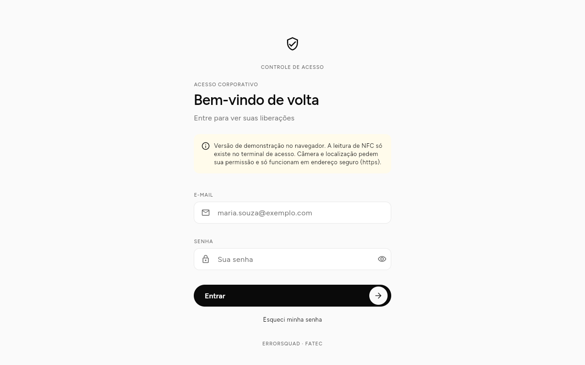
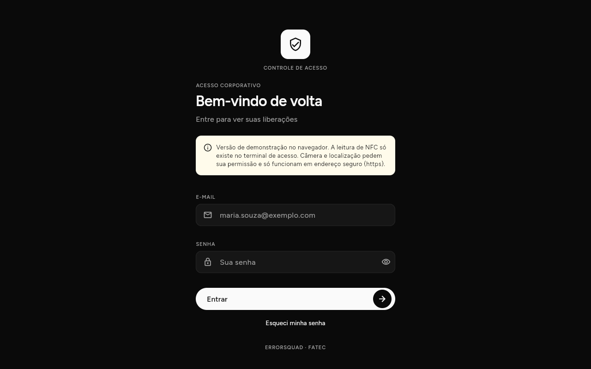
As Figuras 10 a 14 mostram o aplicativo em execução no Motorola g86 5G, com a conta de demonstração. A lista traz autorizações ativas e expiradas; o detalhe mostra local, período, usos restantes e pessoa. A tela de NFC exibe a prova efêmera com contagem regressiva; o scanner aponta a câmera para o QR do terminal; o perfil permite editar o nome e alternar o tema.
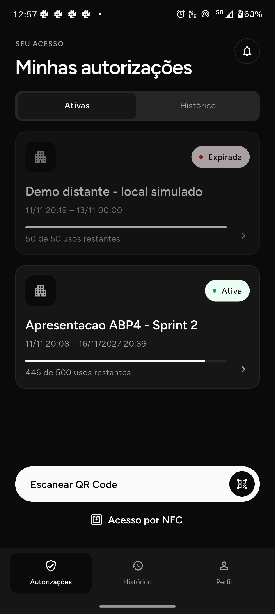
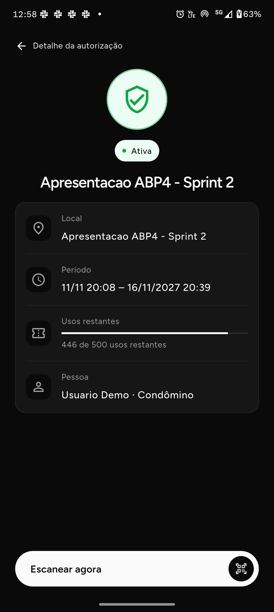
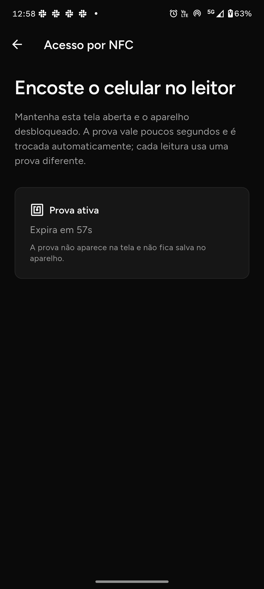
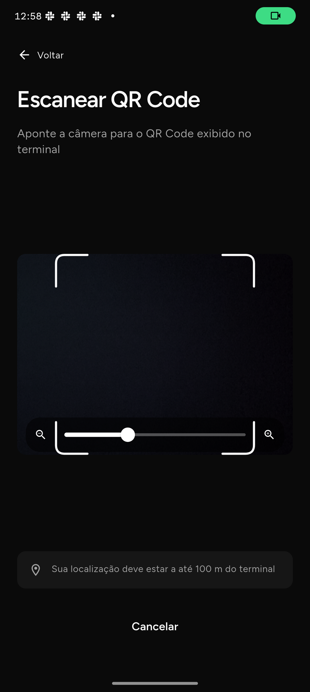
O firmware publica terminals/{id}/status retained, QoS 1, ao conectar e a cada 30 segundos, com state: online e a versão do firmware. Ao conectar, registra também o LWT offline retained. Com isso, o worker deixa de depender de uma leitura NFC recente para considerar o terminal online e voltar a publicar o QR após um boot. O código foi mergeado e tem teste host; a confirmação no ESP32 ficou pendente porque o firmware não foi regravado na véspera da entrega.
A API de produção respondeu com banco ok durante a entrega; a demo web está publicada; o worker MQTT está no ar com /healthz ok. O banco está no Neon, com migrations aplicadas. O broker está no EMQX Cloud com TLS. A operação contínua não foi medida além das verificações pontuais; a evidência da US-37 registra essa distinção.
O Quadro 5 liga cada requisito crítico à evidência e à lacuna. A regra adotada é: o que não tem evidência não é apresentado como comprovado.
Quadro 5 – Rastreabilidade entre requisito, evidência e lacuna
| Requisito | Evidência | Lacuna declarada |
|---|---|---|
| RF09/RF13 (QR) | eventos e ACK no banco; captura do app | abertura física de cancela não demonstrada |
| RF10/RF14 (NFC) | tag e HCE com ACK; evidência US-23 | GPS do terminal ausente |
| RF11 | display, servo, LEDs, buzzer e heartbeat | módulo NEO-6M indisponível |
| RF17 | eventos com decisão, motivo e comando | — |
| RNF02 | TLS no firmware e no broker; revisão US-33 | aceites formais e auditoria de dependências pendentes |
| RNF03 | outbox e relay no backend | fila local do firmware (US-25) bloqueada |
| RNF07 | decisão e orçamento em dt-22.md |
consumo não medido |
| RNF08 | CI com seis checks | firmware sem lint dedicado |
Fonte: elaborado pelos autores (2026).
O leitor RC522 abandona a espera por resposta em cerca de 25 milissegundos. Na primeira apresentação do celular, o Android levava mais tempo para conectar o serviço de emulação, e o leitor registrava timeout. A análise dos logs do Android e do firmware mostrou que o serviço era encontrado, mas a conexão chegava tarde. A solução foi antecipar o serviço enquanto o aplicativo está em primeiro plano e reduzir a resposta para 16 bytes binários, o menor quadro que o leitor já havia demonstrado aceitar. O problema ilustra a diferença entre “o protocolo está correto” e “o protocolo cabe no tempo do hardware”.
A primeira versão pedia a posição apenas após a leitura do QR, com limite de dez segundos. Em ambiente interno, o GPS a frio podia exceder o limite e o pedido nem era enviado. A correção passou a iniciar a busca na abertura do aplicativo e a aproveitar uma posição recente e precisa; o limite de dez segundos foi mantido. A solução não inventa posição: se não houver leitura válida, o aplicativo informa a falha.
O terminal foi planejado com um módulo NEO-6M, mas o componente não estava disponível. Em vez de simular coordenadas — o que produziria uma evidência falsa ”, o GPS foi declarado fora do escopo. A posição continua vindo do aplicativo, e o terminal não publica coordenada. O requisito RF11 permanece parcial por esse motivo, e a matriz registra a lacuna.
A US-25 previa backoff com jitter e fila local persistida para sobreviver a quedas de rede. A análise mostrou que a mudança mexe no caminho de reconexão e no armazenamento não volátil do ESP32, com risco de instabilidade na véspera da banca. O card foi movido para bloqueio, com o escopo preservado: backoff com teto e jitter, fila com capacidade e TTL, carimbo de tempo na leitura, reenvio apenas dentro de 30 segundos, descarte contado e deduplicação por messageId.
O servo posicional é acionado e o feedback funciona, mas o mecanismo físico de uma cancela ou catraca real não foi acoplado. O requisito de “liberação do acesso” está atendido no nível do comando e da atuação elétrica; a demonstração em uma porta real não foi feita. A medição de consumo elétrico também não foi realizada: a DT-22 foi encerrada com decisão de projeto, orçamento estimado em faixa e procedimento de medição preservado, sem declarar valores medidos.
A revisão de segurança encontrou riscos que dependem de decisão do time, como o rate limit em memória não agregar réplicas e o JWT não ter revogação no servidor. Esses riscos estão documentados com recomendação e responsável pendente; não foram apresentados como aceitos. A auditoria automatizada de dependências e a validação de headers no ambiente hospedado também ficaram pendentes. O relatório não trata esses pontos como resolvidos.
Quadro 6 – Riscos residuais e tratamento
| Risco | Tratamento atual |
|---|---|
| Perda de credencial HCE | prova de uso único, hash no banco e expiração de 60 s |
| Reutilização de QR | validade de 25 s, vínculo ao terminal e idempotência |
| Queda de rede no terminal | comando não é executado sem hora confiável; fila offline postergada |
| Terminal comprometido | terminal não decide acesso; só executa comando assinado pela decisão |
| worker reiniciar e perder presença | heartbeat/LWT implementado; confirmação no hardware pendente |
| Consumo elétrico desconhecido | orçamento e procedimento documentados; medição não realizada |
Fonte: elaborado pelos autores (2026).
O projeto entregou um sistema de controle de acesso funcional no escopo de software e de bancada. O aplicativo lê o QR, envia a posição e mostra a decisão; o terminal lê tag e celular, executa o comando e confirma; o backend decide, audita e entrega o comando; o worker mantém a mensageria; e a infraestrutura opera em nuvem com testes e implantação contínua. O fluxo foi exercitado com hardware real: QR, tag física e HCE produziram eventos e ACKs registrados.
As limitações estão declaradas e não escondidas: o GPS do terminal não existe no protótipo, a fila offline do firmware foi postergada, o consumo elétrico não foi medido, a abertura de uma cancela real não foi demonstrada e a revisão de segurança ainda tem aceites pendentes. O trabalho mostra que a separação entre decisão e atuação, a credencial temporária e o registro de cada tentativa são viáveis em um protótipo de baixo custo, e deixa um caminho claro para fechar as lacunas físicas.
Como trabalhos futuros, destacam-se: concluir a US-25 com fila persistida e backoff; integrar o módulo GPS quando disponível ou substituí-lo por uma fonte de posição documentada; acoplar o servo a uma cancela real e medir o consumo; concluir a auditoria de segurança e os aceites formais; e evoluir a demo web para cobrir login e leitura de QR com uma conta de demonstração.
ASSOCIAÇÃO BRASILEIRA DE NORMAS TÉCNICAS. NBR 14724: informação e documentação — trabalhos acadêmicos — apresentação. Rio de Janeiro: ABNT, 2011.
ASSOCIAÇÃO BRASILEIRA DE NORMAS TÉCNICAS. NBR 6023: informação e documentação — referências — elaboração. Rio de Janeiro: ABNT, 2018.
ASSOCIAÇÃO BRASILEIRA DE NORMAS TÉCNICAS. NBR 10520: informação e documentação — citações em documentos — apresentação. Rio de Janeiro: ABNT, 2023.
ASSOCIAÇÃO BRASILEIRA DE NORMAS TÉCNICAS. NBR 6027: informação e documentação — sumário — apresentação. Rio de Janeiro: ABNT, 2012.
ASSOCIAÇÃO BRASILEIRA DE NORMAS TÉCNICAS. NBR 6028: informação e documentação — resumo, resenha e recensão — apresentação. Rio de Janeiro: ABNT, 2021.
ERRORSQUAD. ABP4 — Sistema de Controle de Acesso: repositório do projeto. 2026a. Disponível em: https://github.com/ErrorSquad-ABP/ABP4-Sistema-Controle-Acesso. Acesso em: 24 nov. 2026.
ERRORSQUAD. Contratos MQTT v1. 2026b. Disponível em: https://github.com/ErrorSquad-ABP/ABP4-Sistema-Controle-Acesso/blob/main/docs/architecture/contratos-mqtt.md. Acesso em: 24 nov. 2026.
ERRORSQUAD. Documentação da API. 2026c. Disponível em: https://github.com/ErrorSquad-ABP/ABP4-Sistema-Controle-Acesso/blob/main/docs/api/README.md. Acesso em: 24 nov. 2026.
ERRORSQUAD. Review 2 — Sprint 2. 2026d. Disponível em: https://github.com/ErrorSquad-ABP/ABP4-Sistema-Controle-Acesso/blob/main/docs/entrega/review-2.md. Acesso em: 24 nov. 2026.
ERRORSQUAD. Matriz de requisitos. 2026e. Disponível em: https://github.com/ErrorSquad-ABP/ABP4-Sistema-Controle-Acesso/blob/main/docs/entrega/matriz-requisitos.md. Acesso em: 24 nov. 2026.
ESPRESSIF SYSTEMS. ESP32 Series Datasheet. 2024. Disponível em: https://www.espressif.com/sites/default/files/documentation/esp32_datasheet_en.pdf. Acesso em: 24 nov. 2026.
FACULDADE DE TECNOLOGIA DE JACAREÍ. Desafio 4DSM 2026-2. Jacareí: FATEC, 2026. Documento do desafio.
GOOGLE. Flutter documentation. 2026. Disponível em: https://docs.flutter.dev. Acesso em: 24 nov. 2026.
GOOGLE. Host-based card emulation overview. 2026. Disponível em: https://developer.android.com/develop/connectivity/nfc/hce. Acesso em: 24 nov. 2026.
INTERNATIONAL ORGANIZATION FOR STANDARDIZATION. ISO/IEC 14443-4: cards and security devices for personal identification — contactless proximity objects — Part 4: transmission protocol. Geneva: ISO, 2018.
OASIS. MQTT Version 3.1.1: OASIS Standard. 2014. Disponível em: https://docs.oasis-open.org/mqtt/mqtt/v3.1.1/os/mqtt-v3.1.1-os.html. Acesso em: 24 nov. 2026.
PRISMA. Prisma ORM documentation. 2026. Disponível em: https://www.prisma.io/docs. Acesso em: 24 nov. 2026.
docs/guides/./health e /healthz.config.h local (sem versionar segredos), gravar o firmware e conferir a serial.https://abp4-demo-web.vercel.app e verificar a tela de entrada e o CORS.As evidências por card estão em docs/entrega/evidencias/. Os principais documentos são: us-23-nfc-rc522.md (NFC), us-24.md (heartbeat), us-29-aparelho.md (aplicativo em aparelho), us-35.md (diagramas), us-37.md (worker), us-38.md (demo web), dt-06.md (TLS), dt-22.md (energia), dt-23.md (geofence) e dt-24.md (supply chain). A matriz de requisitos é a fonte de verdade para status e lacunas.